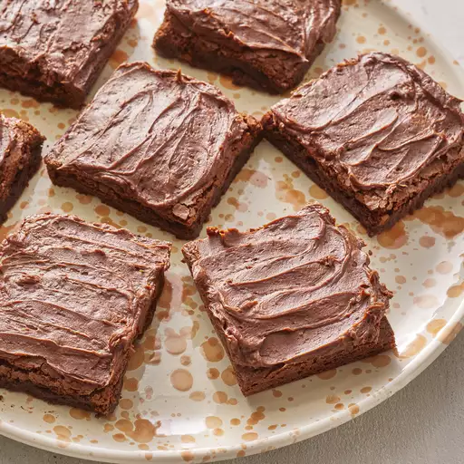

brownies

description
brownies are a delectable treat that never fails to satisfy the sweet
tooth. these dense, fudgy squares of chocolatey goodness are a beloved
indulgence for many. made from a simple mixture of flour, sugar, butter,
eggs, and cocoa powder, brownies are easy to whip up and require minimal
effort. whether enjoyed warm and gooey straight from the oven or cooled to
perfection, they offer a heavenly combination of rich flavor and moist
texture. variations abound, with additions like nuts, chocolate chips, or
even swirls of caramel adding extra layers of decadence. whether paired
with a glass of milk for a comforting snack or served as a dessert at
gatherings, brownies are sure to delight taste buds and bring smiles to
faces.
ingredients
- butter
- white sugar
- eggs
- vanilla extract
- unsweetend cocoa powder
- all-purpose flower
- salt
- baking powder
- honey
- confectioners' sugar
steps
-
preheat the oven to 350 degrees F (175 degrees C). grease and flour an
8-inch square pan.
-
melt 1/2 cup butter in a large saucepan. remove from heat, and stir in
sugar, eggs, and 1 teaspoon vanilla. beat in 1/3 cup cocoa, flour, salt,
and baking powder. spread batter into prepared pan.
-
bake in the preheated oven until top is dry and edges have started to
pull away from the sides of the pan, about 25 to 30 minutes. let cool
briefly before frosting.
-
to make the frosting: combine softened butter, confectioners' sugar, 3
tablespoons cocoa, honey, and 1 teaspoon vanilla extract in a bowl. stir
until smooth. frost brownies while they are still warm.